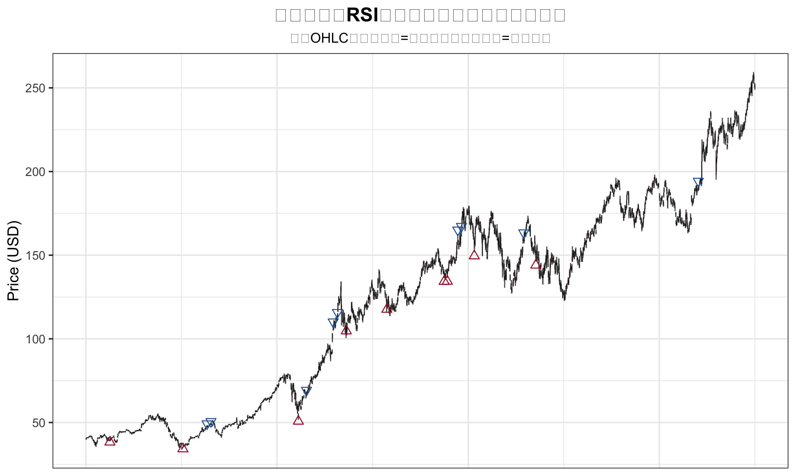
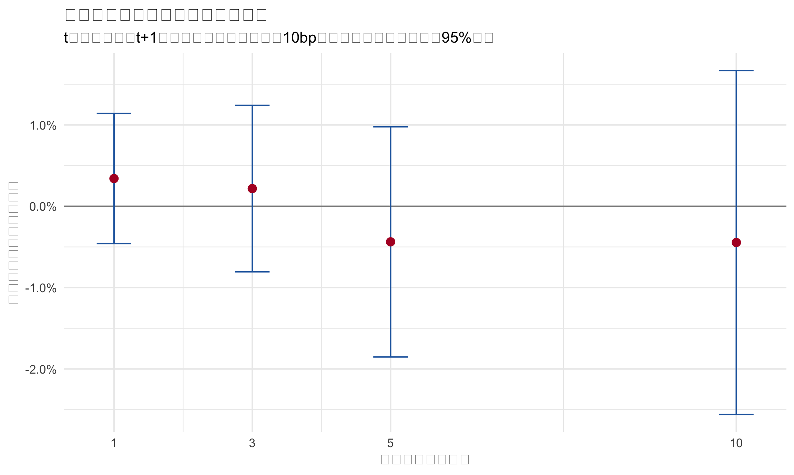

蜡烛图与摆动指标
问题现场
RSI低于30常被称为“超卖”，但强下跌中RSI可以长时间维持低位；若见到锤子和低RSI就抄底，实际上是在同时押注均值回归和趋势结束。本章把形态、摆动指标与市场状态拆成可检验条件。
学习目标
- 计算RSI、随机指标和动量指标；
- 解释“超买/超卖”是位置描述而非交易指令；
- 组合锤子/流星与RSI极端区；
- 比较阈值、窗口和趋势状态的敏感性；
- 识别指标与形态共享价格信息造成的伪确认。
经典形态与市场机制
RSI比较上涨与下跌幅度的平滑平均，随机指标比较收盘在近期高低区间的位置，动量指标衡量价格变化速度。它们都由价格派生，并非独立订单流。与蜡烛形态组合时，可能只是用两种方式重复表达“近期跌得多”或“当日下影长”。
经典用法把RSI高位称为超买、低位称为超卖，更可靠的解释是：它描述近期单向变化占比。趋势市场中极端读数可能表示强势延续，震荡市场中才更符合均值回归假设。
可计算定义
设上涨变化 \(G_t=\max(C_t-C_{t-1},0)\)，下跌变化 \(D_t=\max(C_{t-1}-C_t,0)\)，则：
\[ RSI_{n,t}=100-\frac{100}{1+\overline G_{n,t}/\overline D_{n,t}}. \]
本章用14日窗口。锤子且RSI<35记+1，流星且RSI>65记-1。阈值采用35/65而非固定30/70，是为了保留足够事件；这一选择在研究前写入规则，并在30/70、40/60上完整复核。
研究设计
主实验检验“影线反转形态+RSI极端”的5日净收益。对照包括无RSI过滤的锤子/流星，以及仅RSI阈值信号。稳健性一：RSI窗口9、14、21；稳健性二：阈值30/70、35/65、40/60；稳健性三：按价格相对SMA50分层，检验趋势与震荡非对称性。
R实现
panel <- lab_read_data()
rsi_panel <- eTTR::add_rsi(panel, n = 14)
features <- lab_features()
signals <- lab_base_signals()
signal_r <- ifelse(
signals$hammer > 0 & features$rsi_14 < 35, 1,
ifelse(signals$shooting < 0 & features$rsi_14 > 65, -1, 0)
)eTTR::add_rsi() 对长格式面板按代码处理；辅助函数的RSI用于本章可复现主路径。正式一致性检查应明确Wilder平滑与简单滚动平均的差别。
Python实现
from python.candlestick_lab import load_data, pattern_signal
import numpy as np
from ettr import rsi
panel = load_data()
panel = rsi(panel, n=14, wilder=True)
hammer = pattern_signal("hammer").to_numpy()
shooting = pattern_signal("shooting").to_numpy()
signal_py = np.where(
(hammer > 0) & (panel["RSI_14"] < 35), 1,
np.where((shooting < 0) & (panel["RSI_14"] > 65), -1, 0),
)R与Python必须使用相同平滑方法。仅参数同为14，不保证指标逐行一致。
图形诊断

图形上检查信号是否集中在持续下跌或上涨阶段。RSI在极端区停留越久，单次阈值事件越不独立；可以只保留首次进入极端区的形态。
证据与稳健性
| sample | events | mean_gross | mean_net | win_rate | ci_low | ci_high |
|---|---|---|---|---|---|---|
| 全部事件 | 34 | -0.0034 | -0.0044 | 0.3824 | -0.0185 | 0.0098 |
| 非重叠事件 | 33 | -0.0036 | -0.0046 | 0.3636 | -0.0191 | 0.0100 |

组合条件会显著减少事件，区间因此变宽。应报告完整窗口×阈值网格，并与仅RSI信号比较增量信息。如果组合效果与RSI单独相同，蜡烛形态没有提供额外解释力。
AI协作实验室
AI核对RSI公式、平滑方法和首个有效日期，生成R/Python差异表。约束是不得用全样本选择最优阈值。验收包括RSI范围在0—100、常数价格序列的边界处理、按代码独立计算和手算小样本。
失效条件与常见误区
- 把超卖直接等于将上涨；
- R与Python使用不同平滑方法却只比较周期参数；
- 形态和RSI共享价格信息却称为独立确认；
- 在强趋势中重复计算高度重叠事件；
- 搜索多个阈值后只展示最好结果。
本章小结与练习
摆动指标提供近期价格位置，是否意味着反转取决于市场状态。形态组合需要证明增量信息，而不只是同一价格变化的重复编码。
- 比较Wilder RSI与简单平均RSI的差异。
- 画9/14/21日、三组阈值的完整结果网格。
- 比较“仅RSI”“仅形态”“二者组合”的事件与净收益。
进入下一章前，请确认你能说明超买超卖不等于方向结论，并能检验组合变量是否提供增量信息。